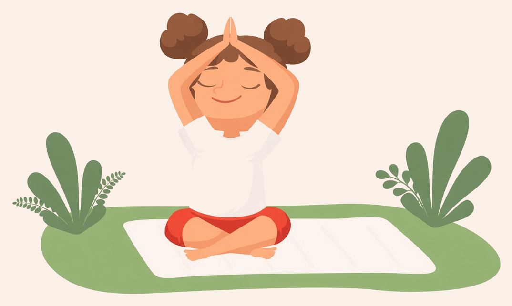

Rosebud Children’s Yoga
Yoga in the Park
Ages 2–5
First-timers welcome!
Just bring comfy clothes and a towel or mat.

Saturdays, Sept 19 & 26 · 10:30–11am
Pacific Park · 615 Dean St, Brooklyn, NY
Suggested donation $10–$20